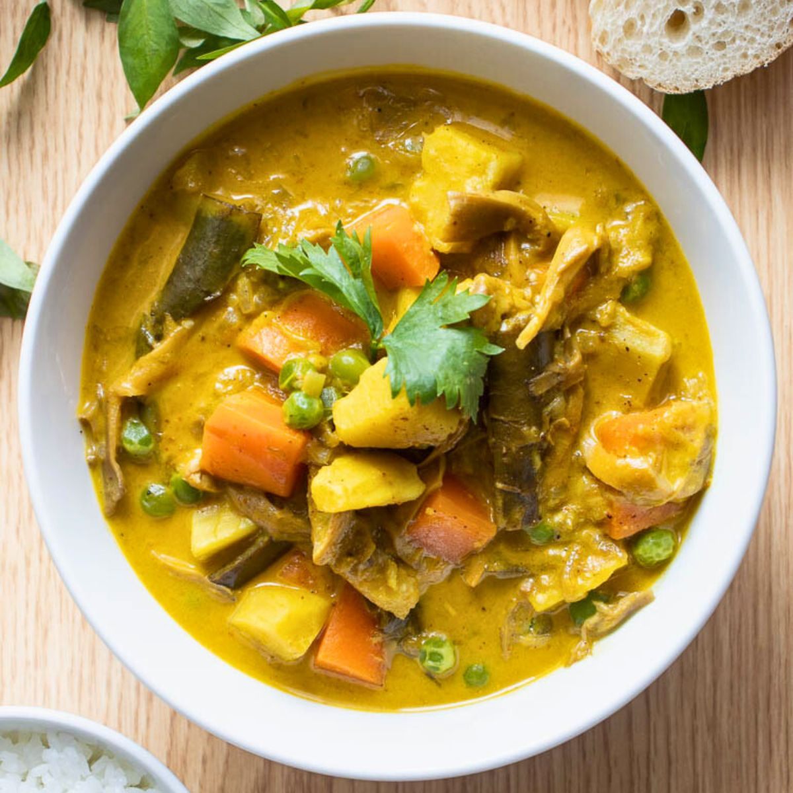

Vietnamese Curry Soup

Description
This Vietnamese-style vegetarian curry soup is rich and aromatic, featuring tofu, vegetables, and coconut milk in a fragrant broth with lemongrass, ginger, and curry spices. Garnished with fresh bean sprouts and cilantro, it's a hearty and flavorful dish.
Ingredients
- 2 tablespoons vegetable oil
- 1 onion, coarsely chopped
- 2 shallots, thinly sliced
- 2 cloves garlic, chopped
- 2 inch piece fresh ginger root, thinly sliced
- 1 stalk lemon grass, cut into 2 inch pieces
- 4 tablespoons curry powder
- 1 green bell pepper, coarsely chopped
- 2 carrots, peeled and diagonally sliced
- 8 mushrooms, sliced
- 1 pound fried tofu, cut into bite-size pieces
- 4 cups vegetable broth
- 4 cups water
- 2 tablespoons vegetarian fish sauce (Optional)
- 2 teaspoons red pepper flakes
- 1 bay leaf
- 2 makrut lime leaves
- 8 small potatoes, quartered
- 1 (14 ounce) can coconut milk
- 2 cups fresh bean sprouts, for garnish
- 8 sprigs fresh chopped cilantro, for garnish
Directions
- Heat oil in a large stockpot over medium heat. Saute onion and shallots until soft and translucent. Stir in garlic, ginger, lemon grass, and curry powder. Cook for about 5 minutes, to release the flavors of the curry. Stir in green pepper, carrots, mushrooms, and tofu.
- Pour in vegetable stock and water. Season with fish sauce, red pepper flakes, bay leaf, and lime leaves. Bring to a boil, then stir in potatoes and coconut milk. When soup returns to a boil, reduce heat and simmer for 40 to 60 minutes, or until potatoes are tender. Garnish each bowl with a pile of bean sprouts and cilantro.
- Enjoy!
Home